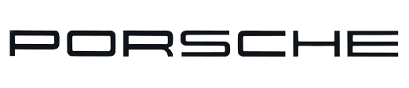
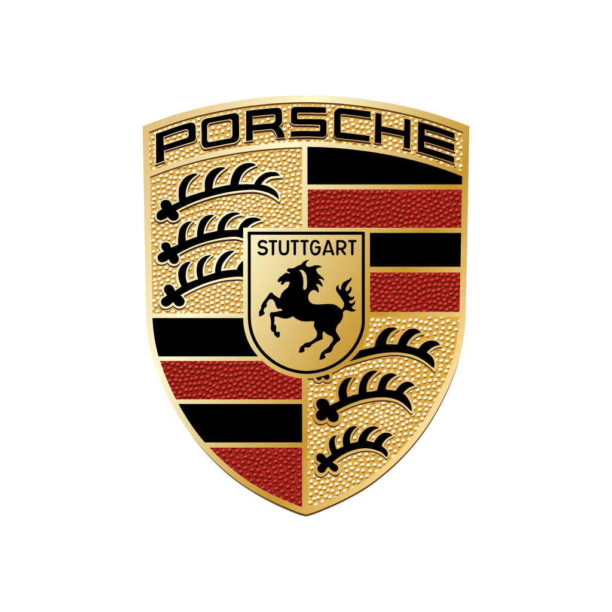

Krótka historia firmy

Założyciel marki, Ferdinand Porsche urodził się 3 września 1875 roku we Wrocławicach.
Karierę konstruktora samochodów Ferdinand Porsche rozpoczął od pracy w przedsiębiorstwie Jakob Lohner & Co.
Jego pierwszymi konstrukcjami były prototypy pojazdów elektrycznych – pierwszy z nich został zaprezentowany na Wystawie Światowej w Paryżu w 1900.
Drugim samochodem był pojazd czterosilnikowy Lohner-Porsche, będący pierwszym na świecie samochodem z napędem na cztery koła.
Na początku lat trzydziestych, 25 kwietnia 1931 roku w Stuttgarcie założył biuro konstrukcyjne, w którym powstały m.in. pierwsze szkice ludowego auta, podstawy późniejszego VW Garbusa.
W 1933 roku Adolf Hitler zlecił Ferdinandowi Porsche zaprojektowanie samochodu osobowego dla niemieckiego ludu.
W czasie II Wojny Światowej, Porsche projektował pojazdy dla wojska, w tym m.in. czołg Tygrys. W 1948, trzy lata przed śmiercią konstruktora, jego syn Ferry założył fabrykę o nazwie Porsche.
Dwa lata później, w 1950 roku powstał pierwszy model sportowego samochodu noszący nazwę Porsche. Porsche jest jedną z najbardziej utytułowanych marek samochodów sportowych.
Tylko do 2000 roku samochody marki Porsche wygrały ponad 24 000 rajdów i wyścigów. Porsche brało udział w rajdach i Formule 1, jednak największe sukcesy odnosiło w wyścigach długodystansowych.
Dzięki takim modelom jak 917, 935, 936, 956 czy 911 GT1 Porsche odniosło najwięcej, bo aż 17 zwycięstw w słynnym wyścigu 24h Le Mans. Najpopularniejszym modelem marki jest bezsprzecznie Porsche 911.
Z czasem marka Porsche zaczęła tworzyć również inne niż typowo sportowe modele aut.
Jednym z takich przykładów jest produkowany od 2002 roku, bardzo dobrze przyjęty na rynku model Porsche Cayenne – samochód osobowy typu SUV klasy wyższej Auto powstało w 1963 roku i miało 6-cylindrowy silnik typu boxer własnej konstrukcji umieszczony z tyłu.
W 2009 roku koncern wprowadził na rynek model Panamera. To luksusowe czterodrzwiowe i czteromiejscowe coupé było pierwszym seryjnie produkowanym samochodem tego typu w ofercie Porsche.
Gdzie nas znajdziesz
Kontakt
Napisz do nas e-mail: contact@pl.porsche.com
Zadzwoń do nas: 800 800 911
Sprawdź nasz instagram:
@porschepl
Jeśli chcesz zobaczyć nasze auta w akcji odwiedź nasz
kanał Youtube, dziękujemy!
Krótko o stronie
Celem powstania tej strony był projekt z informatyki. Strona jest odwzorowaniem prawdziwej strony www.porsche.pl, wszystkie tematyczne zdjęcia umieszczone na niej pochodzą z google grafika oraz ze strony
Porsche, stronę stworzyli: Julita S. i Konrad K. Mamy nadzieję, że spodobała się jakość jej wykonania równoważna do trudu włożonego w jej tworzenie.